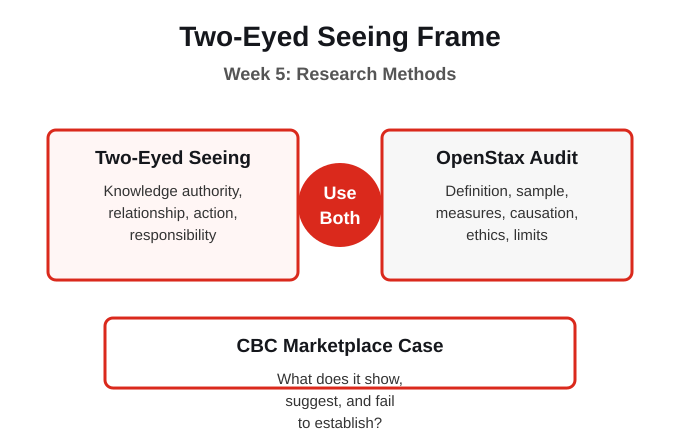
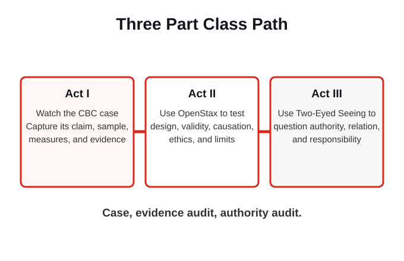
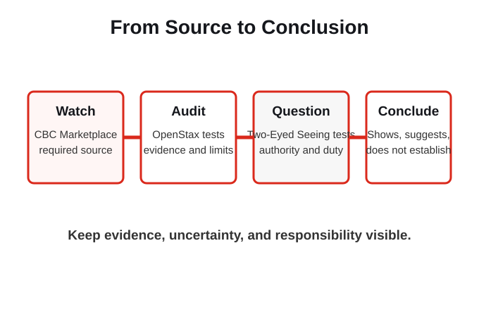

A timer can measure duration. A tally sheet can count behaviour. An interview can explain meaning. An archive can preserve context. None of these tools can answer every question, and each depends on decisions about definitions, participants, privacy, authority, and interpretation. The CBC Marketplace investigation gives us one public claim to audit with more than one method lens.
Which tools collect numbers, which collect stories, and which questions still have no tool?
Strong evidence is not only accurate. It must also be collected and interpreted through responsible relationships.

This week begins with the CBC Marketplace investigation, Why you're addicted to your smartphone. It is the required lesson source. We use its claim, family experiment, interviews, demonstrations, and expert explanations as a real case. OpenStax helps us audit what the investigation can support. Reid and colleagues help us ask whose knowledge defines the problem, who holds authority, and what responsibility follows.
A vivid investigation is not automatically a strong general claim. Its conclusion must match its definition, sample, measures, evidence, and limits.
What does the video show, what does it suggest, and what does it not establish?

OpenStax asks whether the investigation defines addiction clearly, studies an appropriate sample, uses reliable and valid measures, supports its causal language, and protects participants. Reid and colleagues ask whose knowledge defines the problem, whether people being studied hold co-equal authority, how relationships are respected, and what responsibility follows from knowing. Neither audit replaces the other.
OpenStax tests the strength of the evidence. Two-Eyed Seeing changes the research relationship, authority, and responsibility.
Who gets to define harmful smartphone use, and who carries the consequences of that definition?

First, watch the CBC Marketplace video and record its claim, sample, measures, evidence, and causal language. Second, use OpenStax to audit what the investigation shows, suggests, and does not establish. Third, use Reid and colleagues to ask how the question, method, authority, relationships, and responsibility would change if the people being studied held co-equal authority.
The video supplies the case. The readings supply two different, rigorous ways to question it.
Where does the video move from observation to explanation, and does its design support that move?
Do not disclose your own phone habits. Work only with the public video and course sources. Build an evidence map with eight parts: claim, operational definition, sample, evidence, inference, ethics and power, knowledge authority, and limits. Then write three sentences: what the investigation shows, what it suggests, and what it does not establish.
The practice tests source judgement, not personal phone use. No private disclosure is needed.
What further evidence would be needed before the headline could become a defensible general conclusion?
The CBC Marketplace video supplies the case, not a final answer.
Use OpenStax to test the claim, definition, sample, measures, causal language, ethics, and limits.
Use Reid and colleagues to ask who defines the problem, who holds authority, and what responsibility follows.
Separate what the investigation shows, what it suggests, and what it does not establish.